March Papers: De-Norming, Skill-Scaling, Over-Training and Drug-Generating
We've enjoyed March, bringing improving weather and many excellent ML papers to keep us busy. As usual, we're here to share summaries of four of our favourites.
First, Meta share their work that successfully removes the need for LayerNorm in transformers, replacing them with a reduction-free \(\tanh\) (de-norming). This is followed by two papers on scaling - studying the different scaling laws for skill-based vs knowledge-based downstream tasks (skill-scaling), and whether pretraining can go on too long, making downstream performance worse (over-training). Finally, EPFL share a flow-matching GNN model for generating small molecules for drug design (drug-generating).
We hope you enjoy this month's papers as much as we did! If you have thoughts or questions, please reach out to us at @GCResearchTeam.
Transformers without Normalisation
The key idea
In short, the authors looked at the functions learned by layer-norms in a variety of Transformer models and observed that they approximated tanh-like functions. From this observation they propose a DynamicTanh layer to replace layer normalisations and demonstrate capable variations on convnets, vision/speech transformers, and large language models.
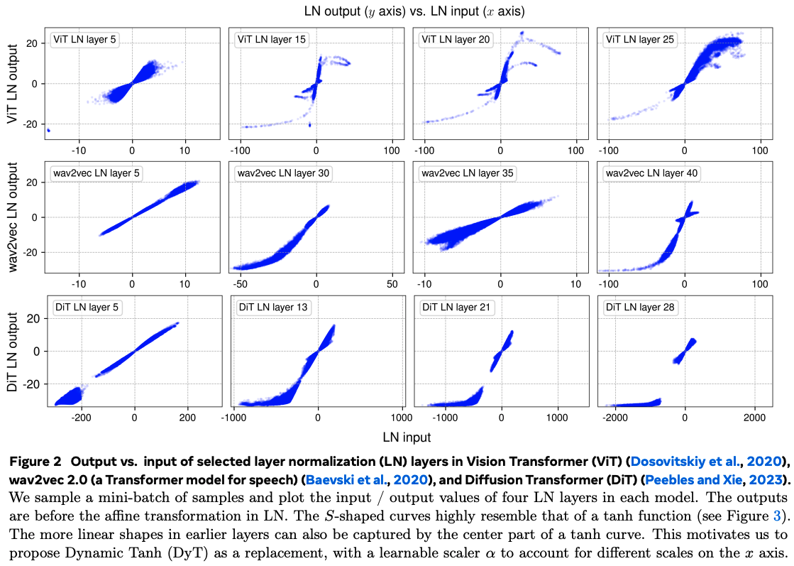
Their method
The authors push data through pretrained vision and speech transformers and show that input/output mappings (pre-affine transform) in later layers are non-linear, and have a distinct S-shape reminiscent of \(\tanh\).
This non-linearity arises because layer-norm computes means and standard deviations on a per-token basis. As such the token-wise mapping through normalisation is linear. However, activation values along particular channels that are consistently large in absolute value increase the variance sufficiently such that affected tokens will have weaker slopes in their individual normalisations. Unaffected tokens have lower variance, and hence stronger slopes in their normalisation. The net effect is such that the extreme values produced across these channels are effectively soft-capped.
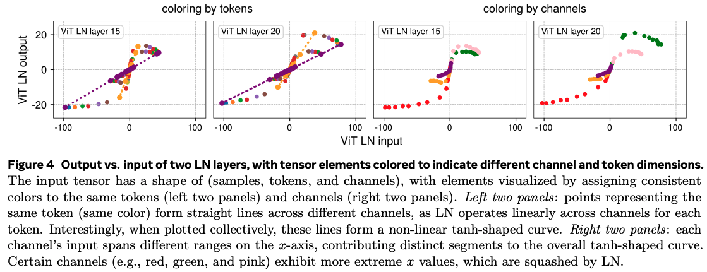
I found this result sufficiently unintuitive that I needed to write a small example IPython notebook on synthetic data to grok this properly.
This observation begs the question of whether inserting the tanh function in place of layer-norm can produce equally capable transformer models. As such the authors propose DynamicTanh: \(\textrm{DynT}(x; \alpha, \gamma, \beta) = \gamma * \tanh(\alpha x) + \beta\), where \(\alpha\) is a learnable scalar and \(\gamma\), \(\beta\) are affine parameters equivalent to those used by layer-norm.
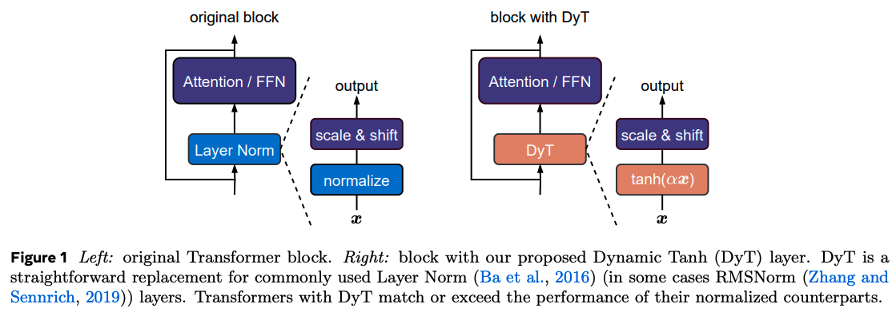
Results
The authors train a bunch of different models with various architectures (transformers, convnets, state-space), modalities (image, text, speech, DNA), and sizes in supervised and self-supervised settings.
The main takeaway is that it kind of just works for smaller transformers, occasionally with a few tweaks needed to the training recipe to improve numerical stability (e.g., using Adam \(\beta_2 = 0.95\))
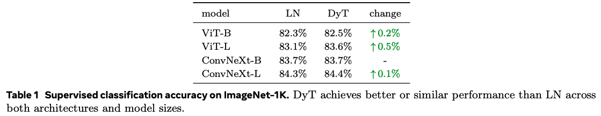
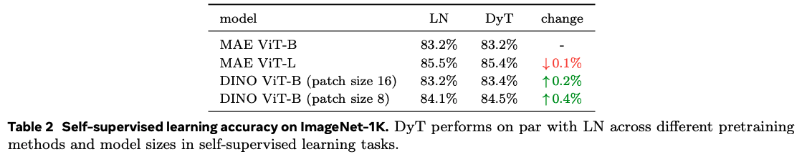
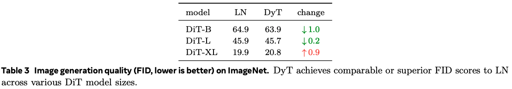
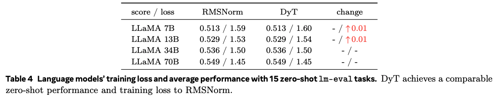
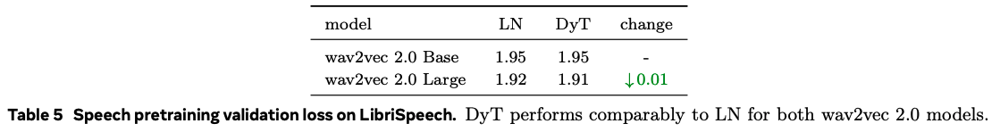
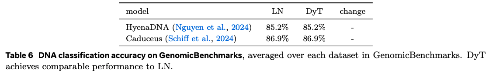
Interestingly, \(\alpha\) seems to follow the inverse standard deviation of activations throughout training, providing a global rescaling similar to batch-norm without needing to collect activation statistics.
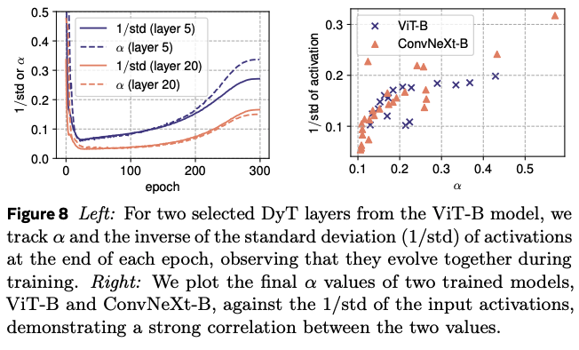
Large language model training with DynamicTanh requires heavier tuning. Successful convergence of training depends on the initial value of \(\alpha\) and appears to require different values for attention and non-attention layers. The initial value must also decrease with increased model width.
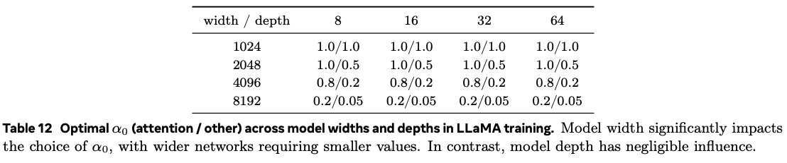
Takeaways
The use of \(\tanh\) in place of layer-norm is appealing given it throws away the need for expensive reductions required for computing activation statistics. As we move matrix multiplications down to lower and lower bit-widths, these reductions become relatively more expensive as part of training.
The key caveat is that the lower cost of training large language models with DynamicTanh is lost when required to sweep two extra hyperparameters. A \(\mu\)P-like hyperparameter transfer rule would be extremely helpful to mitigate this.
Compute Optimal Scaling of Skills: Knowledge vs Reasoning
The key idea
The authors investigate the differences in optimal LLM parameter count, for a fixed training budget, when looking separately at knowledge-based skills and reasoning-based skills, rather than using Aggregate Performance (e.g. validation loss) as it's usually done in scaling-laws papers. They show evidence that knowledge QA tasks are capacity-hungry, while reasoning (in the form of coding) tasks are data-hungry.
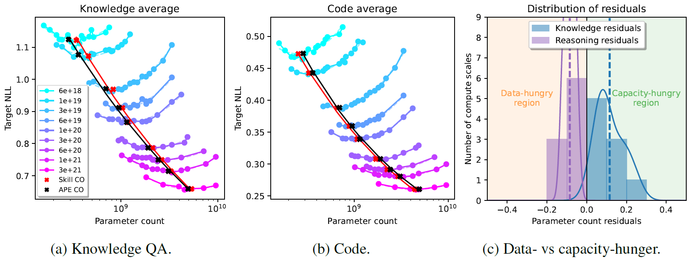
Background
When training a model, the compute budget (i.e., total number of FLOPs) can be increased by scaling either the model size or the amount of training data. In the case of LLMs, the FLOPs budget is typically estimated as \(B \approx 6pt\), where \(p\) is the parameter count and \(t\) is the number of training tokens. Scaling-laws aim at quantifying the Compute Optimal (CO) model size \(p\) which minimizes the loss on a validation set, for a fixed training budget \(B\). This is done by first fitting IsoFLOP curves to the validation loss of models of different sizes but trained with the same compute budget, and then fitting a power law to the minima of these curves (as shown for instance in Figure 1).
Method
The authors consider a set of 19 common evaluation datasets for LLMs, dividing them into two groups: those quantifying knowledge skills (e.g., Trivia QA) and those quantifying code skills (e.g., HumanEval). They then infer the skill-dependent CO parameter count by looking separately at the validation loss on the two groups and comparing the resulting power laws with the one from the LLama 3 herd paper, which was fitted to an Aggregate Performance Estimator (APE). The models have sizes ranging from 40M to 8B parameters and are pretrained on a datamix comprising 58.4% documents that are high in factual knowledge, 19.9% documents containing code, with the remaining 21.7% not falling in any category. They go on to study how the skill-dependent CO varies when changing the proportion of relevant data in the training datamix, and whether the two COs can be aligned in this way.
Results
As shown in Figure 1, there is a difference between knowledge and code skills: the former prefers capacity over data, compared to the APE curve, while the latter is more data-hungry. The difference is more evident in lower compute regimes.
To understand how much this difference is a consequence of the ratio of knowledge vs code documents used as training data, the authors train models with a fixed compute budget but change the relative proportions in the datamix. Unsurprisingly, increasing the amount of skill-dependent training data improves the performance on that specific skill, but - more notably - also the COs shift, towards being more capacity-hungry (Figure 2).
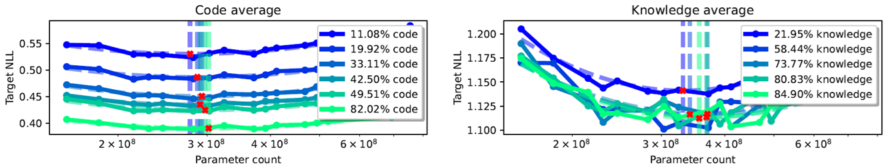
However, even when correcting for the proportion of skill-relevant data, a fundamental difference between knowledge and code remains, with knowledge still being substantially more capacity-hungry (Figure 3). This can be explained by the fact that knowledge is much harder to compress than code.
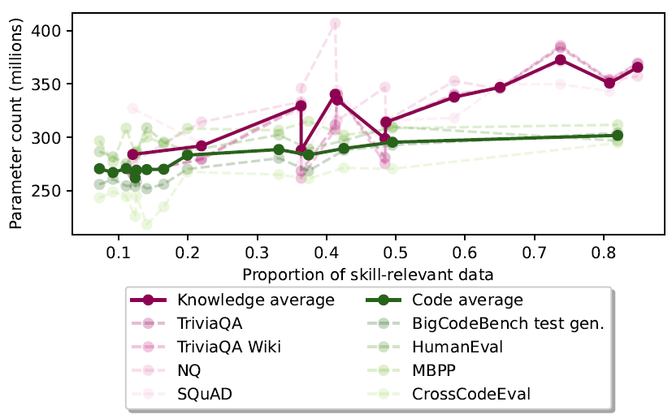
Finally, the authors observe that, while it is possible in general to align the COs for the two skills when fixing a specific validation dataset, the optimal parameter count for the same skill varies massively (up to 30%, in low-budget regimes) across validation sets. This highlights the importance of choosing a validation set that adequately represents what the model should be able to capture.
Overtrained Language Models Are Harder to Fine-Tune
The key idea
Current generations of LLMs are often "overtrained" on trillions of tokens since pretrained model performance continues to increase past the Chinchilla point of optimal pretraining compute. We often assume that a better pretrained model would result in better task performance after fine-tuning, but this work challenges this assumption.
In the headline results (below), the authors take OLMo-1B intermediate checkpoints and show that the best performance after instruction fine-tuning is achieved with the 2.3 trillion token checkpoint, and performance degrades after 3 trillion tokens.
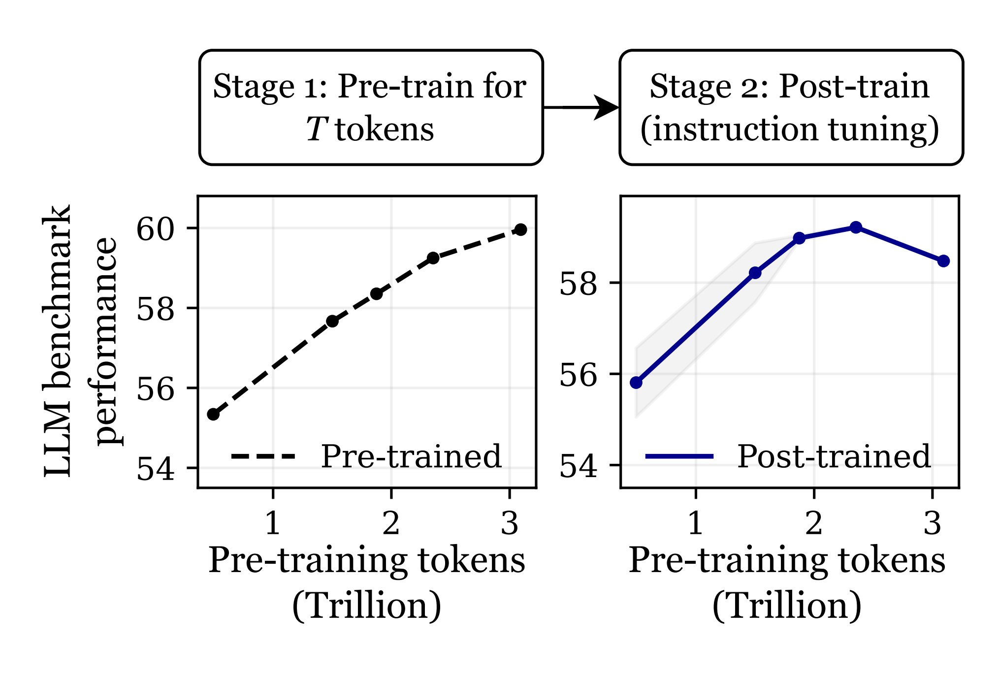
Results - open checkpoints
First, the authors show degradations with continued pretraining empirically using open LLM checkpoints (see Figure 1 above and Figure 2 below). The effect is more common in Out Of Distribution (OOD) tasks, which were not present in the fine-tuning protocol, in contrast to In Distribution (ID) tasks which were. If it were confined to OOD tasks, this would be catastrophic forgetting, but since it is present in ID tasks, the authors propose the term catastrophic overtraining. Since it worsens with continued pretraining, the models exhibit progressive sensitivity to modification.
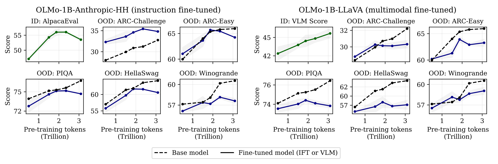
Results - controlled pretraining
There is a confounding factor with the above results since intermediate checkpoints did not finish their learning rate decay schedule and this could cause the appearance of catastrophic overtraining. To control for this, the authors pretrain their own small LMs and observe catastrophic overtraining on some tasks, with RTE and TREC showing ID degradation with additional pretraining tokens.
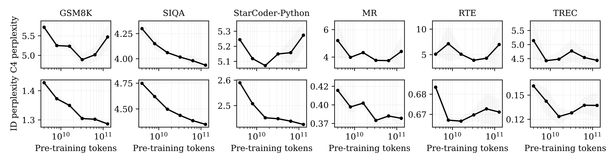
Results - theory
Finally, the authors provide a theoretical insight into the effect. For a simplified model, they show that random perturbations inserted after pretraining runs of increasing duration will degrade pretraining loss monotonically with duration. The core idea is that the model becomes more sensitive to small singular values in the mapping that is being learnt, over training. This increased sensitivity leads to degradation when the model parameters are perturbed. Then they show a similar result when fine-tuning on a misaligned task. These results directly concern catastrophic forgetting, since the fine-tuning task causes degradation in the original task. The authors argue that pretraining capabilities are important after fine-tuning and therefore these results are indicative of catastrophic overtraining too.
Takeaways
Catastrophic overtraining is an interesting idea, perhaps related to recent results showing that continued pretraining can reduce performance after quantisation (Kumar et al.). There is mounting evidence of progressive sensitivity — models trained for longer are more sensitive to modification. It isn't yet clear if it is practical to work around this sensitivity with careful fine-tuning (e.g. regularisation, as mentioned in this work) and if this can result in a better outcome than shorter pretraining.
Multi-Domain Distribution Learning for De Novo Drug Design
The key idea
The authors developed a conditional generative model for structure-based drug design that integrates continuous flow matching and discrete Markov bridges to learn the distribution of the chemical, geometric, and physical aspects of protein-binding ligands. In addition to learning the distribution, the model outputs uncertainty estimates that detect out-of-distribution (OOD) samples and correlate with molecular properties. Generative models are generally optimized to learn the distribution of the training dataset. However, in practice, we are often interested in generating molecules with specific desired properties rather than sampling from the entire distribution. To enable the model to sample from regions with the desired metrics, the authors proposed a Direct Preference Optimization (DPO)-like preference alignment approach, which improves the quality of generated molecules for specific targeted metrics.
Background
Small molecules are the most common class of drugs, accounting for about \(85\%\) of FDA-approved drugs. Developing these drugs is costly and time-consuming, which has sparked interest in computational tools to accelerate the design of small molecules at lower costs.
Traditional computational drug design methods focus on improving specific metrics such as binding affinity or synthesizability. While these approaches are effective at optimizing a single metric, they may come at the expense of others. Recently, generative models have emerged as promising methods to learn "drug-like patterns" from training data. These models are trained to capture the underlying distribution of the training data, but they are not optimized for specific metrics. As a result, the quality of the sampled molecules may be compromised. Therefore, there is a need for a model that captures the multifaceted properties of drugs while still generating molecules with excellent metric evaluations. DRUGFLOW is a generative model, and the authors have developed a preference alignment strategy to improve the quality of generated molecules, thus combining the strengths of both approaches.
Their method
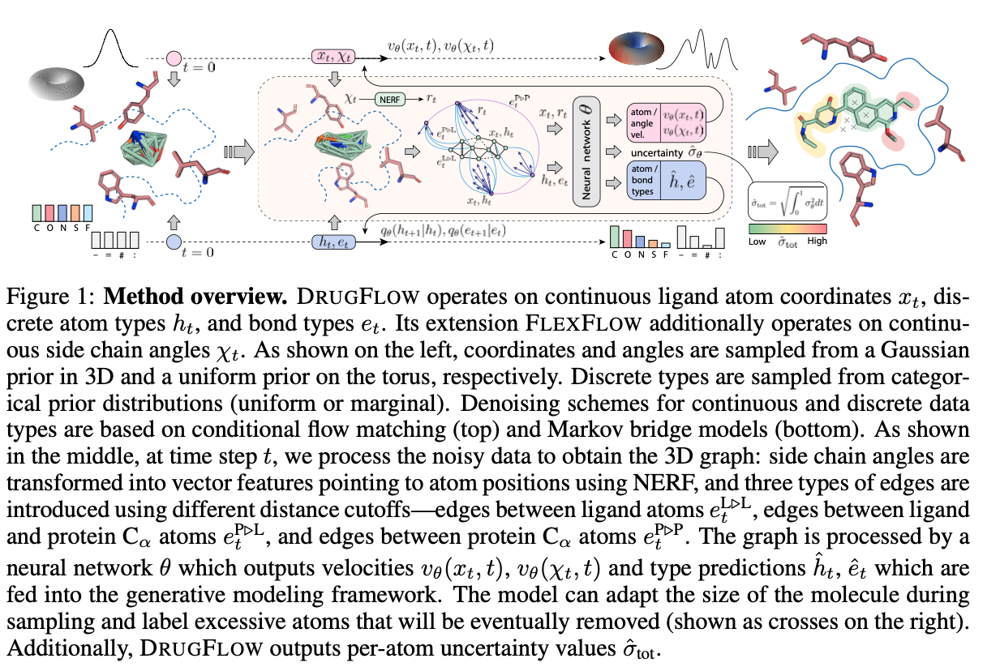
DRUGFLOW is a conditional probabilistic model that learns ligand atom coordinates (\(x_{t}\)), atom types (\(h_{t}\)), bond types (\(e_{t}\)), and uncertainty estimates at the atom level (\(\hat{\sigma}_{\text{tot}}\)), as shown in Figure 1. The generative process is conditioned on a fixed protein backbone. The model operates on continuous features (atom coordinates) and discrete features (atom types and bond types). The continuous features are learned using flow matching and sampled from a Gaussian prior distribution, as shown on the left-hand side of Figure 1. The discrete features are learned using a Markov bridge model and sampled from a categorical prior distribution. The authors also developed FLEXFLOW, an extension of DRUGFLOW, which also learns continuous side-chain angles of the protein backbone, but we will not discuss it here.
Representation of ligands and protein binding
The model operates on a molecular graph represented as \(\mathcal{G} = (\mathcal{z}, \mathcal{e})\), where \(\mathcal{z}\) is a set of nodes and \(\mathcal{e}\) is the set of edges. Nodes are represented by \(\mathcal{z} = [\mathcal{x}, \mathcal{h}]\), with 3D geometric coordinates \(x \in \mathbb{R}^{3N}\) and features \(h \in \mathbb{R}^{dN}\), where \(\mathcal{N}\) is the number of atoms.
-
Ligand representation: Ligands are represented by atoms as nodes, bonds as edges, and atom types as node features (one-hot encoded).
-
Protein representation: Amino acids in the protein backbone are represented by the central carbon atom (\(C_{\alpha}\)) of the backbone of the amino acid. The protein is represented as nodes of (\(C_{\alpha}\)) and edges between (\(C_{\alpha}\)) atoms. Edges between amino acids (\(C_{\alpha}\)) are constructed using a predefined cutoff distance of 10 angstroms. Here, node features include one-hot encoded amino acid types and a vector representation of its atoms.
-
Edges are also created between ligand atoms and protein (\(C_{\alpha}\)) atoms using a predefined cutoff distance of 10 angstroms.
Continuous flow matching and uncertainty estimation
The continuous atom coordinates were learnt using Independent-coupling Conditional Flow Matching (ICFM) and considering a Gaussian conditional probability path defined by
with the flow path
to model the flow for ligand coordinates. This results in a constant velocity vector field
The goal of flow matching is to regress from the prior distribution (Gaussian noise) to a desired distribution (the training data distribution). Assuming that the flow matching regression error is normally distributed with standard deviation \(\sigma_\theta\), the loss function that maximizes the likelihood of the true vector field under this uncertainty assumption can be written as:
where \(v_\theta(x_t, t) \in \mathbb{R}^d\) and \(\sigma_\theta(x_t, t) \in \mathbb{R}\) are two output heads of the neural network, and \(\dot{x}_t\) is the ground-truth conditional vector field.
The vector field (\({v_\theta(x_t, t)}\)) learned using graph neural network operates on ligand and protein representation. The graph neural network uses Geometric Vector Perceptrons (GVP) to ensure equivariance to global rotation and translation. As shown in Figure 1, the model generates a per-atom uncertainty score in addition to the vector field for flow matching at every sampling step. The total per-atom uncertainty estimate is calculated as the sum of the uncertainties of the particular atom along the flow matching path as defined below:
Atom types and bonds are learned using Markov bridge models, but we will not discuss these here for brevity.
Alignment
In real-world applications, for example, when developing a drug to treat a given disease, we are interested in ligands with particular chemical and physical properties. If molecules with such or similar properties were underrepresented in the training set, they would be in the tail of the learned distribution and are less likely to be sampled during generation. To address this challenge, the authors proposed an alignment strategy inspired by Direct Preference Optimization (DPO), commonly used in large language models.
To perform preference alignment, the authors trained a new model \(\phi\) and used a fixed reference (pre-trained DRUGFLOW) model \(\theta\) for comparison. Only \(\phi\) is optimized during training. For each data point \(\mathcal{c}\), losses were computed for winning and losing samples: \(L_c^w(\phi)\) and \(L_c^l(\phi)\), where \(L_c^w(\phi) := L_c(x^w, \phi)\) and \(L_c^l(\phi) := L_c(x^l, \phi)\). These include the flow matching loss for coordinates and Markov bridge losses for atom and bond types. The same losses are also computed for the reference model \(\theta\) for comparison.
The multi-domain preference alignment (MDPA) loss is defined as:
where:
- \(\phi\): The new model being trained.
- \(\theta\): The fixed reference model.
- \(L_c^w(\phi)\), \(L_c^l(\phi)\): Losses for winning and losing samples in domain \(c\).
- \(\Delta_w^c = L_c^w(\phi) - L_c^w(\theta)\), \(\Delta_l^c = L_c^l(\phi) - L_c^l(\theta)\): Per-domain improvements over the reference model.
- \(\lambda_c\): Weight for domain \(c\).
- \(\lambda_w\), \(\lambda_l\): Regularization weights for total winning and losing losses.
- \(\beta_t\): Temperature or scaling factor.
- \(\sigma\): Sigmoid function.
Regularization is applied through \(L_w(\phi)\) and \(L_l(\phi)\), which aggregate losses across domains for winning and losing samples, respectively.
Results
The authors evaluated the performance of the model in terms of learning the training data distribution and absolute metrics. The model's ability to learn the distribution of the training data was assessed by measuring the proximity of the distribution of chemical property metrics in generated molecules to that of the training data.
As shown in Table 1 of the paper, DRUGFLOW outperformed other models in approximating the training data distribution based on metrics measuring the chemical and structural properties of 3D molecules. However, in terms of absolute metric values, the baseline models outperformed DRUGFLOW.
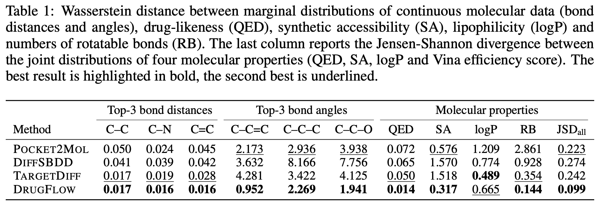
During sampling, the model generates the molecular structure along with an uncertainty estimate. The uncertainty estimate detects out-of-distribution samples. As shown in Figure 2B, samples near the tail of the distribution had higher uncertainty compared to those around the mode. Uncertainty estimation also showed a negative correlation with binding affinity and a positive correlation with both the size of the generated molecules and structural clashes, as shown in Figures 2C,D below.
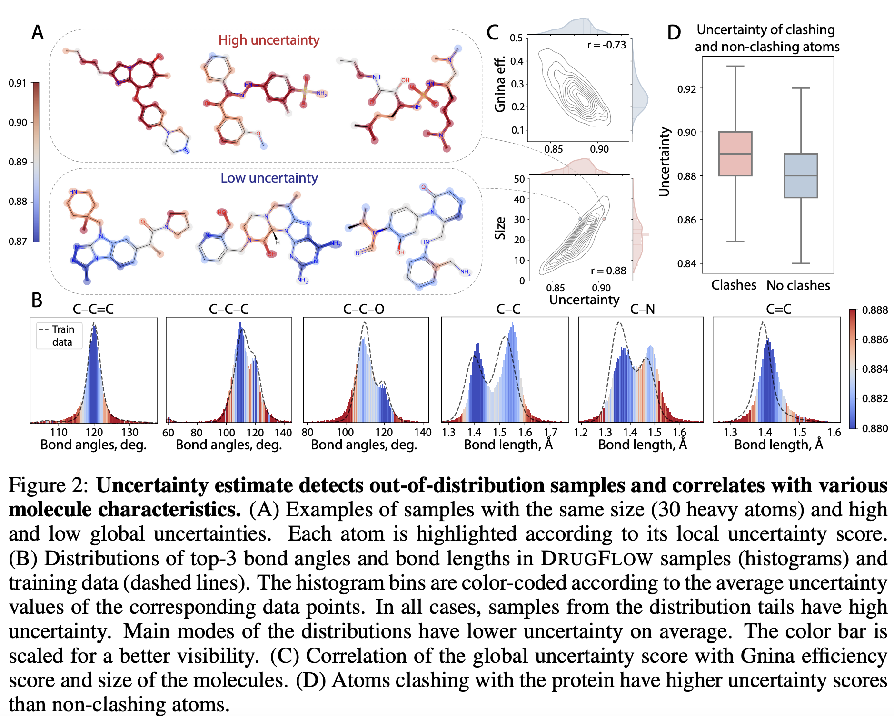
The authors conducted preference alignment for drug-likeness (QED), synthetic accessibility (SA), vina efficiency score, and rapid elimination of swill (REOS) filters. To train the preference-aligned model:
- Generate multiple molecules using a reference (pre-trained DRUGFLOW model) with the same conditioning protein
- Score the molecules for the metric of interest
- Identify winning and losing pairs
- Perform preference alignment
In addition to preference-aligned models, the authors fine-tuned the pre-trained DRUGFLOW model using only the winning samples and compared their performance. As shown in Figure 4 of the paper (also shown below), the 3D molecules generated by the preference-aligned model exhibited superior chemical properties and binding affinity to the target protein compared to the training set, as well as molecules generated by the reference and fine-tuned models.
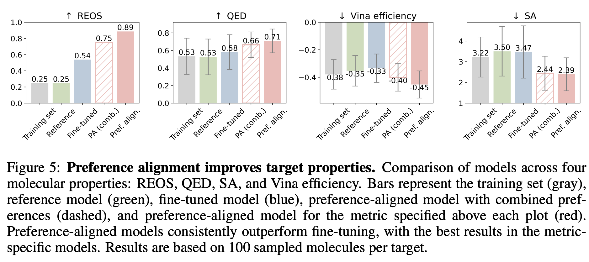
Takeaways
Generative models are trained to learn the distribution of training data, and during sampling or inference, the generated samples reflect this distribution. To use these models for practical applications where we are interested in molecules with specific chemical and physical properties, it is important to consider the representation of molecules with similar features in the training set. Our molecules of interest might lie in the tails of the learned distribution, making them less likely to be sampled. The authors of DRUGFLOW have shown aligning the model using a preference dataset could improve the quality of the generated molecules.
...